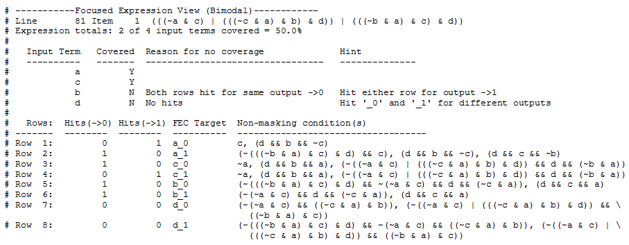

A unimodal expression is one that has all input terminals in only one mode (either inverting or non-inverting), whereas a bimodal expression has at least one of its input terminals in both inverting and non-inverting mode.
These modes of inversion are defined as follows:
Inverting mode — When setting the value of an input terminal to '0' (or '1') with all other terminals in their quiescent states in an FEC row, evaluates the expression to '1' (or '0'), the input terminal is said to be operating in an inverting mode.
Non-Inverting mode — When setting the value of an input terminal to '1' (or '0') with all other terminals in their quiescent states in an FEC row, evaluates the expression to '1' (or '0'), the input terminal is said to be operating in a non-inverting mode.
Instead of the lexical expression that appears in the original source code, the FEC reports show the canonical representation.
Examine the following FEC report table for the expression (a & b & c), when it receives input vectors {101, 011, 111}:
# ----------------Focused Expression View-----------------
# Line 82 Item 1 ((a & b) & c)
# Expression totals: 2 of 3 input terms covered = 66.6%
#
# Input Term Covered Reason for no coverage Hint
# ----------- -------- ----------------------- --------------
# a Y
# b Y
# c N '_0' not hit Hit '_0'
#
# Rows: Hits FEC Target Non-masking condition(s)
# --------- --------- -------------------- -------------------------
# Row 1: 1 a_0 (c && b)
# Row 2: 1 a_1 (c && b)
# Row 3: 1 b_0 (c && a)
# Row 4: 1 b_1 (c && a)
# Row 5: ***0*** c_0 (a & b)
# Row 6: 1 c_1 (a & b)Each FEC report consists of two tables;
The first table reports coverage on a per-input basis. For inputs that are not covered, the report gives a brief reason for the lack of coverage. The “Hint” column provides information on how to get the input covered. In the FEC report above, input 'c' was not covered because the coverage bin '_0' associated with this input (that is, c_0) did not receive any hits. The hint says that to get 'c' FEC covered, an input vector satisfying non-masking condition for c_0 (that is, (a & b), while c == 0) must be applied to this expression during simulation.
The second table goes a step deeper and expands each input into its coverage bins. The table lists the Rows, Hits, FEC Target and Non-masking condition(s).
In the FEC report table above, consider the first row containing the FEC Target (or bin) of a_0, where a is the input and _0 is the value of that input. The full tag of a_0 indicates that this row delivers FEC testing when a's value is 0. This bin was incremented since an input vector (011) satisfying its Non-masking condition (c && b) was observed. By definition a is 0 for every Non-masking condition on the a_0 list. The input vector (111) satisfying the Non-masking condition for a_1 - row 2 in the table - was also observed. Again, by definition, the a_1 Non-masking conditions are identical to the a_0 except with the 'a' bit equal to 1. It is always the case that non-masking conditions are identical for each pair of FEC rows (non-short circuit logic only).
In walking through the FEC report table, you can see how FEC ensures that each input a, b, and c has been shown to independently affect the expression output. For example, for the conditions of FEC to be satisfied, when an a_0 input vector flips to the corresponding a_1 vector—that is, only bit 'a' changes to 1, with the other bits unchanged—the output value of the expression MUST also change.
If FEC coverage indicates any bins are missed (such as c_0 in Row 5 of Example 1) you know that none of your tests ever produced a value of ‘1’ when other inputs are in a state that allows it to control the output. You should then work on the design/stimulus to improve FEC coverage. One method of raising FEC coverage numbers is to modify test stimulus such that input vectors satisfying Non-masking conditions of zero-hit rows appear at the expression's inputs.
Examine the FEC report table for the expression ((~a & c) | (a & b & ~c & d) | (a & ~b & c & d)) when it receives input vectors {0100, 1001, 1111}.

As in the simple, unimodal case shown in Example 1, the first table reports coverage on a per-input basis. In the FEC report above, input ‘b’ was not covered because both rows corresponding to this input were hit for the same output value (that is, ‘b’ changed but the output did not change).
The second table expands each input into its coverage bins. The hits are divided into two columns based on the output value of the expression. The output value for any FEC target is observed by applying an input pattern that satisfies the corresponding non-masking conditions. An input terminal qualifies as FEC covered only when it receives _0 and _1 hits for different output values. This ensures that the terminal is independently controlling the expression output while operating in one mode (inverting or non-inverting).
In the FEC report above, consider the first row containing the FEC Target (or bin) of a_0, where ‘a’ is the input and ‘_0’ is the value of this input. The bin corresponding to 'a_0' was incremented for output value 1, as an input vector satisfying the non-masking conditions was observed. Similarly, an input vector satisfying non-masking condition for a_1 - row 2 in the table - was observed for output 0. Since input 'a' receives hits in both the '_0' and '_1' rows for different output values, 'a' is considered 100% FEC covered.
Even though input 'b' receives hits in both '_0' and '_1' rows, it is not considered FEC covered. This is because both the rows are hit for the same output value (that is, 0). In cases where an input is not FEC covered, use the reason and hint to improve the test stimulus, or potentially modify the design if a design issue is found.
Looking at the FEC tables for bimodal expressions, above, you can see that inputs that are FEC-covered have at least one non-zero value in both the "->0" and "->1" columns. Any input with two '0's in a given column is uncovered. If you scan down the ->0 and ->1 columns looking for strings of '0's, you can then concentrate on those inputs and their matching input patterns.